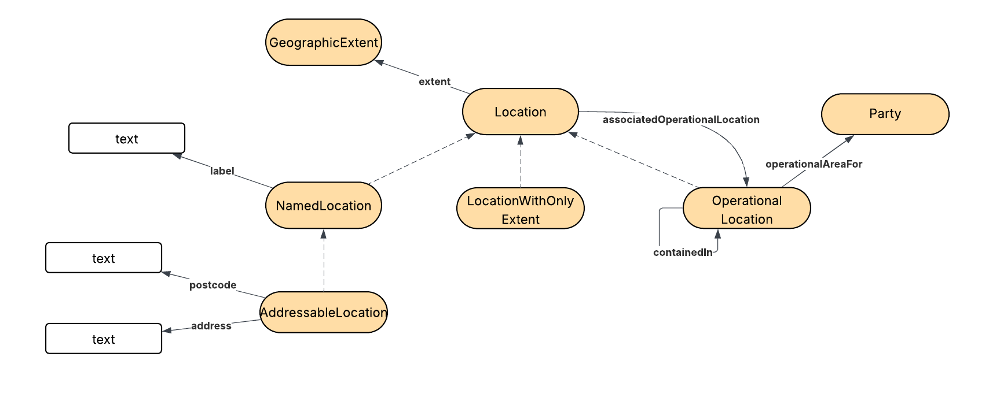

IRI: http://environment.data.gov.uk/ontology:AddressableLocation
IRI: http://environment.data.gov.uk/ontology:Location
IRI: http://environment.data.gov.uk/ontology:LocationWithOnlyExtent
IRI: http://environment.data.gov.uk/ontology:NamedLocation
IRI: http://environment.data.gov.uk/ontology:Party
IRI: http://environment.data.gov.uk/ontology:OperationalLocation
IRI: http://environment.data.gov.uk/ontology:associatedOperationalLocation
IRI: http://environment.data.gov.uk/ontology:containedIn
IRI: http://environment.data.gov.uk/ontology:operationalLocationFor
IRI: http://environment.data.gov.uk/ontology:siteType
IRI: http://environment.data.gov.uk/ontology:address
IRI: http://environment.data.gov.uk/ontology:label
IRI: http://environment.data.gov.uk/ontology:lat
IRI: http://environment.data.gov.uk/ontology:long
IRI: http://environment.data.gov.uk/ontology:siteType
This HTML document was obtained by processing the OWL ontology source code through LODE, Live OWL Documentation Environment, developed by Silvio Peroni .